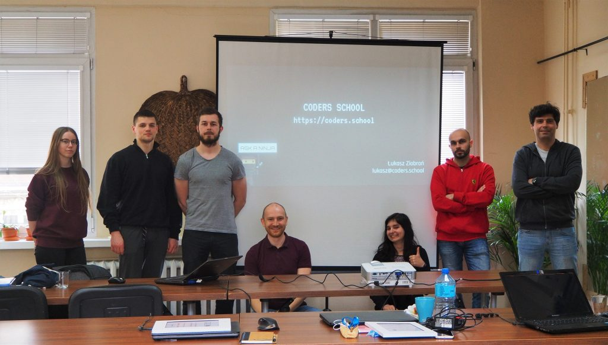
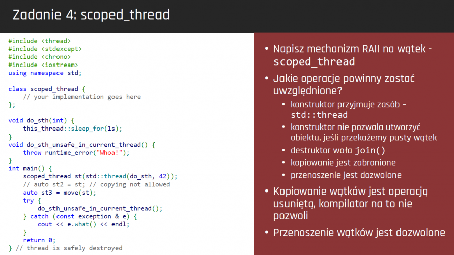

Wielowątkowość w C++ 2019 – podsumowanie mini kursu

Jesteśmy już po pierwszej edycji kursu Wielowątkowość w C++. Był to zupełnie nowy kurs, przygotowany od zera w głównej mierze przeze mnie, ale nie tylko.
W premierowej edycji mini kursu z Wielowątkowości w C++ wzięło udział 12 osób. Większość z nich stanowili już dotychczasowi kursanci, który ukończyli Kurs C++ lub mini kurs z STLa i postanowili jeszcze bardziej rozwinąć swoje umiejętności.
W ciągu 4 spotkań omówiliśmy i przećwiczyliśmy mnóstwo zagadnień. Pokryliśmy praktycznie całą część biblioteki standardowej związanej z wielowątkowością w standardzie C++17.

Tematyka mini kursu Wielowątkowość w C++
- Teoria wielowątkowości`
- Wątki (std::thread)`
- Współdzielenie danych (std::mutex, std::lock_guard, std::unique_lock, std::shared_lock,std::scoped_lock, std::lock)`
- Zmienne warunku (std::condition_variable)`
- Zmienne atomowe i model pamięci (std::atomic)`
- Jednokrotne wywołania (std::call_once, std::once_flag)`
- Komunikacja jednokierunkowa (std::promise, std::future)`
- Funkcje asynchroniczne (std::async, std::packaged_task)`
- Problemy współbieżności (zakleszczenia, zagłodzenia, problem producenta i konsumenta, problemczytelników i pisarzy, problem ucztujących filozofów)`
- Testowanie aplikacji współbieżnych`
- Współbieżne wzorce projektowe (thread pool, active object, proactor, monitor, barrier, scheduler, #8230;)`
Standardowo dużo pracy miało miejsce poza spotkaniami. Do zaimplementowania były różne wielowątkowe aplikacje, które miały obrazować problemy na jakie standardowo można się natknąć podczas pisania takich aplikacji.
Dodatkowy trener
Jakiś czas temu zgłosił się do mnie Ihor, który chciał dołączyć do Coders School jako trener. Przeprowadził on lekcję o std::promise i std::future, która została bardzo dobrze odebrana przez uczestników. Ponadto Ihor przeglądał rozwiązania kursantów i sugerował im poprawki oraz czuwał nad jakością moich materiałów szkoleniowych i zgłaszał nieścisłości lub błędy, które udało mu się wychwycić, za co bardzo mu dziękuję 🙂 Zapewne będziemy wspólnie prowadzić 4 edycję Kursu C++, która odbędzie się w te wakacje.

Kolejna edycja dopiero za rok
Kurs zakończył się 5 maja. Kursanci otrzymali certyfikaty ukończenia kursu. Kolejna edycja mini kursu Wielowątkowość w C++ planowana jest dopiero w 2020 roku. Kurs zostanie też uzupełniony o nowości, które pojawią się w bibliotece standardowej C++20.
Wszystkim uczestnikom mini kursu Wielowątkowość w C++ bardzo serdecznie dziękuję za wspólnie spędzony czas. Mam nadzieję, że zdobyta wiedza i umiejętności zostaną przez was dobrze spożytkowane 🙂